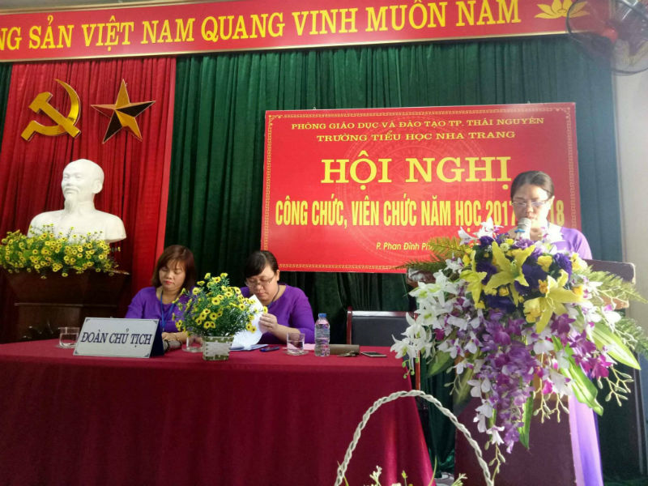
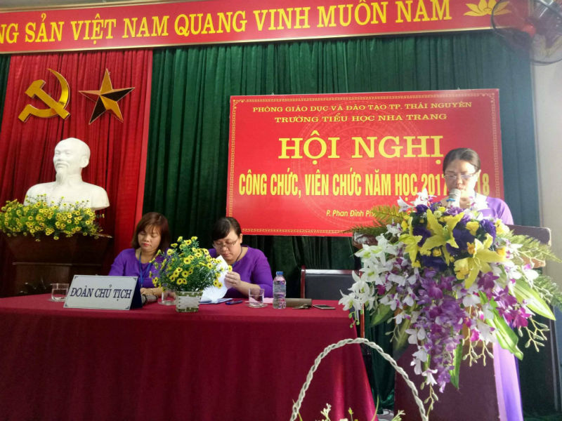

Hội nghị công chức, viên chức năm học 2017 – 2018

Về dự Hội nghị có Đ/c Lê Xuân Hải – Phó Trưởng phòng GD-ĐT thành phố Thái Nguyên, Đ/c Dương Duy Hưng và Chu Thị Hoa – chuyên viên phòng GD-ĐT thành phố Thái Nguyên cùng 47 công chức, viên chức của nhà trường.
Hội nghị được nghe đồng chí Phạm Thị Bích – Bí thư chi bộ, Hiệu trưởng nhà trường báo cáo về kết quả thực hiện Nghị quyết Hội nghị công chức, viên chức năm học 2016 – 2017 và phương hướng kế hoạch nhiệm vụ năm học 2017 – 2018.
 

Đ/c Phạm Thị Bích – Bí thư chi bộ, Hiệu trưởng nhà trường
báo cáo tổng kết năm học 2016-2017 và phương hướng nhiệm vụ năm học 2017-2018
Hội nghị đã thông qua báo cáo sửa đổi, bổ sung, quy chế dân chủ cơ sở, quy chế chi tiêu nội bộ, quy định của ngành, cơ quan. Hội nghị đã thông qua Báo cáo hoạt động của Ban thanh tra nhân dân nhiệm kỳ 2015-2017 và chương trình công tác, hoạt động của ban thanh tra nhân dân trong nhiệm kỳ 2017 – 2019

Đ/c Lương Thị Thu Hiền – Trưởng ban Thanh tra nhân dân báo cáo hoạt động
Ban TTND nhiệm kỳ 2015-2017 và phương hướng nhiệm vụ nhiệm kỳ 2017-2019
Hội nghị đã thông qua quyết toán tài chính năm học 2016 – 2017 và kế hoạch thu chi năm học 2017 – 2018, quy chế chi tiêu nội bộ năm 2018.

Đ/c Lưu Thị Hồng Thủy – Kế toán nhà trường
báo cáo quyết toán tài chính và Quy chế chi tiêu nội bộ năm 2018
Sau các báo cáo là phần tham luận đầy trách nhiệm của các thành viên tham dự Hội nghị về các chỉ tiêu thi đua, các giải pháp để thực hiện tốt nhiệm vụ năm học 2017 – 2018 như:
Đ/c Vũ Thị Thủy Tiên Báo cáo tham luận Ra đề kiểm tra
và đánh giá học sinh tiểu học theo văn bản hợp nhất số 03/VBHN-BGDĐT;
Đ/c Nguyễn Thị Minh Huyền với tham luận Phát triển đoàn viên ưu tú vào Đảng.
Hội nghị đã bầu Ban thanh tra nhân dân nhiệm kỳ 2017-2019.
Hội nghị công chức, viên chức đã ghi nhận và tuyên dương thành tích của các cá nhân và tập thể trong năm học 2016-2017.
Đ/c Lê Xuân Hải – Phó Trưởng phòng GD ĐT TP. Thái Nguyên trao Bằng khen Tập thể Lao động Xuất sắc; Bằng khen của TW Đoàn TNCS Hồ Chí Minh cho danh hiệu Liên đội
Đ/c Phạm Thị Bích – Hiệu trưởng trao Bằng khen của TW Đoàn cho Đ/c Phạm Thùy Dương – TPT Đội
Đ/c Lê Xuân Hải – Phó Trưởng phòng GD ĐT trao giấy khen của Giám đốc Sở GD ĐT tỉnh Thái Nguyên cho Đ/c Nguyễn Thị Minh Thu – Phó Hiệu trưởng;
Đ/c Chu Thị Hoa – Chuyên viên Phòng GD ĐT TP. Thái Nguyên trao thưởng
các cá nhân đạt danh hiệu chiến sĩ thi đua cấp tỉnh và chiến sĩ thi đua cấp cơ sở

Đ/c Lê Xuân Hải – Phó Trưởng phòng GD ĐT và Đ/c Phạm Thị Bích – Hiệu trưởng
trao thưởng các cá nhân đạt danh hiệu Lao động tiên tiến năm học 2016-2017.
Tại Hội nghị Đ/c Lê Xuân Hải đã biểu dương thành tích của tập thể và các cá nhân trong năm học 2016-2017 và chỉ đạo trong năm học 2017-2018 nhà trường tiếp tục phát huy những thành tích đã được, vượt khó và hoàn thành tốt nhiệm vụ năm học 2017-2018.
Hội nghị công chức, viên chức trường Tiểu học Nha Trang năm học 2017 – 2018 đã diễn ra thành công tốt đẹp. Hơn bao giờ hết, mỗi cán bộ, giáo viên, nhân viên nhà trường càng hiểu rõ trách nhiệm của mình, vượt trên những khó khăn. Đội ngũ công chức, viên chức với tâm huyết, lòng nhiệt tình, năng lực lãnh đạo sáng tạo của Ban giám hiệu nhà trường, tinh thần đoàn kết, sự quyết tâm nỗ lực của mỗi cán bộ giáo viên, công nhân viên, trường Tiểu học Nha Trang vững tin sẽ có một năm học mới gặt hái được nhiều thành công!